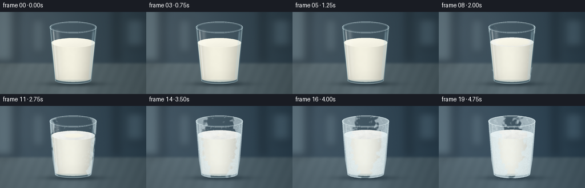
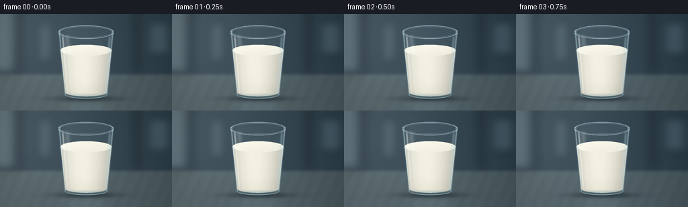

CODING AGENTS AS PIXEL WORLD MODELS
traex/GPT-6.1-Sol · phygen_093
点击播放 · 原生 RGB 像素
逐轮保存的候选
回放视频、检查图与代码变化。
每份候选均可单独播放。实际图片检查记录在下方工具轨迹中。
候选 01播放与检查图
点击播放 · 原生 RGB 像素


展开代码变化
--- 上一保存版本
+++ 本次保存版本
@@ -0,0 +1,217 @@
+from pathlib import Path
+import math
+import numpy as np
+from PIL import Image, ImageDraw, ImageFilter
+import artifact_io
+
+ROOT = Path(__file__).resolve().parent
+W,H,S=256,144,4
+w,h=W*S,H*S
+rng=np.random.default_rng(93)
+y,x=np.mgrid[0:h,0:w].astype(np.float32); x/=S; y/=S
+
+def smooth(a,b,v):
+ t=np.clip((v-a)/(b-a),0,1)
+ return t*t*(3-2*t)
+
+def mask_polygon(points):
+ m=Image.new('L',(w,h)); d=ImageDraw.Draw(m)
+ d.polygon([(int(a*S),int(b*S)) for a,b in points],fill=255)
+ return np.asarray(m).astype(np.float32)/255
+
+def ellipse(cx,cy,rx,ry):
+ return np.clip((1-((x-cx)/rx)**2-((y-cy)/ry)**2)*S*min(rx,ry)*.6+.5,0,1)
+
+def over(im,col,a):
+ a=np.clip(a,0,1)[...,None]
+ return im*(1-a)+np.asarray(col)*a
+
+def strokes(im, lines, color, width=1):
+ layer=Image.new('RGBA',(w,h));d=ImageDraw.Draw(layer)
+ for pts,alpha in lines:
+ d.line([(int(a*S),int(b*S)) for a,b in pts],fill=(*color,int(np.clip(alpha,0,255))),width=max(1,int(width*S)),joint='curve')
+ arr=np.asarray(layer).astype(np.float32)
+ return over(im,arr[:,:,:3],arr[:,:,3]/255)
+
+# Out-of-focus, steel-blue surroundings and a satin stone counter.
+base=np.zeros((h,w,3),np.float32)
+horizon=smooth(86,94,y)
+for k,(bg,tab) in enumerate(zip([62,79,89],[90,105,110])):
+ base[:,:,k]=bg+(tab-bg)*horizon
+base+= (12*np.exp(-((x-46)/66)**2-((y-32)/67)**2)-20*(x/W)**1.7)[...,None]
+background=Image.new('RGBA',(w,h)); d=ImageDraw.Draw(background)
+d.rectangle([0,0,23*S,89*S],fill=(150,170,175,95))
+d.rectangle([28*S,0,31*S,88*S],fill=(17,30,40,150))
+d.rectangle([201*S,0,207*S,87*S],fill=(29,41,48,145))
+d.rectangle([219*S,10*S,254*S,62*S],fill=(133,161,173,60))
+d.rectangle([55*S,11*S,79*S,72*S],fill=(156,176,180,48))
+background=background.filter(ImageFilter.GaussianBlur(7*S))
+ba=np.asarray(background).astype(float)
+base=over(base,ba[:,:,:3],ba[:,:,3]/255)
+noise=rng.normal(0,.6,(h,w));base+=noise[...,None]
+base+= (1.5*np.sin(x*.34+y*.15)*horizon)[...,None]
+shadow=np.exp(-((x-130)/45)**2-((y-126.2)/4.2)**2)
+base=over(base,[19,31,37],shadow*.55)
+reflection=np.exp(-((x-128)/31)**4)*np.exp(-((y-143)/18)**2)*smooth(127,133,y)
+base=over(base,[152,170,178],reflection*.14)
+
+# Tumbler geometry: rounded heavy base and a softly tapered wall.
+outerpts=[(87,27),(88,44),(92,94),(96,119)]
+outerpts +=[(128+32*math.cos(t),119+8*math.sin(t)) for t in np.linspace(math.pi,0,64)]
+outerpts +=[(164,94),(168,44),(169,27)]
+outerpts +=[(128+41*math.cos(t),27+10*math.sin(t)) for t in np.linspace(0,-math.pi,64)]
+glassmask=mask_polygon(outerpts)
+rad=41-(np.clip(y,27,119)-27)*9/92
+u=(x-128)/rad
+wall=glassmask*smooth(.68,.99,np.abs(u))
+# Spatially coherent noise, crystal grains, and frozen top facets.
+fine=rng.random((h,w)).astype(np.float32)
+low=Image.fromarray((rng.random((36,64))*255).astype(np.uint8)).resize((w,h),Image.Resampling.BICUBIC).filter(ImageFilter.GaussianBlur(1*S))
+low=np.asarray(low).astype(np.float32)/255
+# Voronoi-like ice boundaries on the top, with perspective-compressed cells.
+seeds=np.column_stack([rng.uniform(-1,1,85),rng.uniform(-1,1,85)])
+# Persistent dendritic surface-frost structures, grown rather than flickering.
+ferns=[]
+for j in range(310):
+ yy=rng.uniform(21,123)
+ rr=41-np.clip(yy-27,0,92)*9/92
+ if j<175:
+ side=rng.choice([-1,1]); xx=128+side*rng.uniform(.67,.98)*rr
+ else: xx=128+rng.uniform(-.88,.88)*rr
+ length=rng.uniform(1.5,5.6); angle=rng.uniform(-math.pi,math.pi)
+ birth=.18+.57*rng.random()+.18*(1-abs((xx-128)/rr))
+ ferns.append((xx,yy,length,angle,birth,rng.uniform(.65,1)))
+# Frozen-milk fissures are confined to the upper surface.
+cracks=[]
+for ang in [0.4,1.9,3.3,4.6,5.4]:
+ p=[]
+ for r in np.linspace(.97,.27,9):
+ a=ang+.09*math.sin(r*25+ang)
+ p.append((r*math.cos(a),r*math.sin(a)))
+ cracks.append(p)
+
+frames=[]
+for frame in range(20):
+ t=frame/19
+ freeze=smooth(.12,1,t)
+ # Gradual cool daylight, not an abrupt scene change.
+ im=base.copy()
+ im[:,:,0]-=4*t; im[:,:,2]+=5*t
+ # Refraction of the surroundings in the hollow upper portion of the glass.
+ srcx=np.clip((128+(x-128)*.81)*S,0,w-1).astype(int)
+ refr=base[np.arange(h)[:,None],srcx].copy()
+ im=over(im,refr,glassmask*.50)
+ im=over(im,[142,171,182],glassmask*.11)
+ im=over(im,[32,61,73],wall*.19)
+
+ # Freezing causes a modest 6% volume expansion, visible as a rising cap.
+ topy=54-4.1*freeze
+ rtop=38-(54-topy)*.08
+ bottomy=117
+ rbottom=30.8
+ milkpts=[(128-rtop,topy),(128-rbottom,bottomy)]
+ milkpts +=[(128+rbottom*math.cos(a),bottomy+5.8*math.sin(a)) for a in np.linspace(math.pi,0,80)]
+ milkpts +=[(128+rtop,topy)]
+ milkpts +=[(128+rtop*math.cos(a),topy+8.2*math.sin(a)) for a in np.linspace(0,-math.pi,80)]
+ milk=mask_polygon(milkpts)
+ mur=(x-128)/(38-(np.clip(y,topy,117)-topy)*.1)
+ shade=1- .15*np.abs(mur)**2-.055*np.clip(mur,0,1)+.025*np.exp(-((x-110)/12)**2)
+ shade-=.028*smooth(93,121,y)
+ cream=np.stack([242*shade-4*freeze,240*shade+0*freeze,224*shade+8*freeze],axis=-1)
+ cream+=((low-.5)*1.9+ (fine-.5)*.45)[...,None]
+ im=over(im,cream,milk)
+ # Elliptical surface, initially liquid-smooth, finally opaque and crystalline.
+ top=ellipse(128,topy,rtop,8.2)
+ qx=(x-128)/rtop; qy=(y-topy)/8.2
+ rr=np.sqrt(qx*qx+qy*qy)
+ topcol=np.empty_like(im)
+ light=5*(-qy)-4*qx
+ for k,c in enumerate([246,244,230]): topcol[:,:,k]=c+light
+ # Ice advances inward from the chilled edges; the center freezes last.
+ front=1.20-1.45*freeze
+ solid=smooth(front-.10,front+.13,rr+(low-.5)*.15)*smooth(.13,.30,t)
+ d1=np.full((h,w),100,np.float32);d2=d1.copy()
+ for sx,sy in seeds:
+ dist=(qx-sx)**2+(qy-sy)**2
+ lesser=dist<d1
+ d2=np.where(lesser,d1,np.minimum(d2,dist)); d1=np.minimum(d1,dist)
+ borders=np.exp(-np.maximum(np.sqrt(d2)-np.sqrt(d1),0)*85)
+ icegrain=(fine-.5)*6+(low-.5)*9
+ topcol+=solid[...,None]*np.stack([-8+icegrain-9*borders,-5+icegrain-6*borders,5+icegrain-2*borders],axis=-1)
+ im=over(im,topcol,top)
+ # A small milk meniscus at the side: sheen disappears as it solidifies.
+ meniscus=[]
+ for a in np.linspace(.1,math.pi-.1,75):
+ meniscus.append((128+rtop*math.cos(a),topy+8.2*math.sin(a)))
+ im=strokes(im,[(meniscus,90*(1-.65*freeze))],(255,253,234),.55)
+ if freeze>.60:
+ fissures=[]
+ for pts in cracks:
+ p=[(128+xx*rtop,topy+yy*8.2) for xx,yy in pts]
+ fissures.append((p,55*smooth(.60,.94,freeze)))
+ im=strokes(im,fissures,(122,158,170),.27)
+
+ # Clear glass edges, refractive base, and long soft-box highlights.
+ edge=np.exp(-((np.abs(u)-.97)/.026)**2)*glassmask
+ im=over(im,[201,226,230],edge*.52)
+ left=np.exp(-((u+.86)/.035)**2)*glassmask*smooth(28,36,y)*(1-smooth(109,123,y))
+ im=over(im,[248,251,248],left*(.50-.14*freeze))
+ leftsoft=np.exp(-((u+.70)/.095)**2)*glassmask*smooth(28,36,y)*(1-smooth(107,123,y))
+ im=over(im,[255,255,251],leftsoft*.18)
+ right=np.exp(-((u-.88)/.048)**2)*glassmask*smooth(29,38,y)*(1-smooth(113,125,y))
+ im=over(im,[186,218,229],right*.34)
+ basemask=ellipse(128,119.8,31.7,6.4)*smooth(117,122,y)
+ im=over(im,[97,133,146],basemask*.30)
+ baseglint=np.exp(-((y-(120.3+5.4*np.sqrt(np.clip(1-((x-128)/31.6)**2,0,1))))/.55)**2)
+ im=over(im,[210,232,235],baseglint*basemask*.58)
+
+ # Condensation develops first, becoming a diffuse layer of exterior rime.
+ frost_field=.53*np.abs(u)**1.7+.20*low+.19*smooth(71,124,y)+.15*(1-smooth(34,53,y))
+ frostcoverage=smooth(.90-.62*freeze,.99-.62*freeze,frost_field)*glassmask*smooth(.12,.42,t)
+ frostalpha=frostcoverage*(.25+.38*freeze)
+ im=over(im,np.stack([209+fine*24,227+fine*20,233+fine*18],axis=-1),frostalpha)
+ # Branching crystals create the optical signature of actual frost, not a color filter.
+ flines=[]
+ for xx,yy,ll,ang,birth,strength in ferns:
+ grow=smooth(birth,birth+.23,t)
+ if grow<=0: continue
+ localrad=41-np.clip(yy-27,0,92)*9/92
+ if abs(xx-128)>localrad-1: continue
+ lx=ll*grow
+ end=(xx+math.cos(ang)*lx,yy+math.sin(ang)*lx)
+ opacity=(45+95*freeze)*strength*grow
+ flines.append(([(xx,yy),end],opacity))
+ for z in [.32,.55,.77]:
+ bx=xx+math.cos(ang)*lx*z;by=yy+math.sin(ang)*lx*z
+ for sg in [-1,1]:
+ a=ang+sg*.70
+ branch=lx*(1-z)*.70
+ flines.append(([(bx,by),(bx+math.cos(a)*branch,by+math.sin(a)*branch)],opacity*.83))
+ # Clip fern pixels to the glass, including the transparent empty space above milk.
+ frostlayer=Image.new('RGBA',(w,h)); fd=ImageDraw.Draw(frostlayer)
+ for p,a in flines:
+ fd.line([(round(xx*S),round(yy*S)) for xx,yy in p],fill=(232,246,250,int(a)),width=1)
+ fa=np.asarray(frostlayer).astype(np.float32)
+ im=over(im,fa[:,:,:3],fa[:,:,3]/255*glassmask)
+ grains=(fine>.982).astype(float)*frostcoverage
+ im=over(im,[250,253,254],grains*.55)
+ # Rim stays elliptical and intact while acquiring a delicate white frost crust.
+ rim=[];inner=[]
+ for a in np.linspace(0,2*math.pi,150):
+ rim.append((128+41*math.cos(a),27+10*math.sin(a)))
+ inner.append((128+38.5*math.cos(a),27+8.0*math.sin(a)))
+ im=strokes(im,[(rim,137),(inner,86)],(188,216,224),.8)
+ frontarc=[(128+40.3*math.cos(a),27+9.5*math.sin(a)) for a in np.linspace(.08,math.pi-.08,90)]
+ backarc=[(128+40.3*math.cos(a),27+9.5*math.sin(a)) for a in np.linspace(math.pi+.13,2*math.pi-.13,90)]
+ im=strokes(im,[(frontarc,150),(backarc,165)],(240,249,249),.55)
+ im=strokes(im,[(rim,125*freeze)],(245,252,253),.45+.55*freeze)
+ # Tiny local ice grains at the foot of the glass in the deep-freeze stage.
+ foot=np.exp(-((x-128)/37)**4-((y-127.8)/2.3)**2)*smooth(.58,.97,t)
+ im=over(im,[200,222,230],foot*(fine>.91)*.32)
+ # Gentle lens falloff and stable sensor grain complete the photographic rendering.
+ vig=1-.11*((x-128)/160)**2-.055*((y-72)/110)**2
+ im*=vig[...,None]
+ frameim=Image.fromarray(np.clip(im,0,255).astype(np.uint8)).resize((W,H),Image.Resampling.LANCZOS)
+ frames.append(np.asarray(frameim))
+
+artifact_io.save(np.stack(frames),ROOT)
可观测工具轨迹
实际执行的命令与返回图片。
命令 1exit 0
/bin/bash -lc 'ls -la; cat prompt.txt; cat GENERATION_RULES.md; cat task_spec.json'
命令 2exit 0
/bin/bash -lc 'cat artifact_io.py'
命令 3exit 0
/bin/bash -lc "cat > generate.py <<'PY'
from pathlib import Path
import math
import numpy as np
from PIL import Image, ImageDraw, ImageFilter
import artifact_io
ROOT = Path(__file__).resolve().parent
W,H,S=256,144,4
w,h=W*S,H*S
rng=np.random.default_rng(93)
y,x=np.mgrid[0:h,0:w].astype(np.float32); x/=S; y/=S
def smooth(a,b,v):
t=np.clip((v-a)/(b-a),0,1)
return t*t*(3-2*t)
def mask_polygon(points):
m=Image.new('L',(w,h)); d=ImageDraw.Draw(m)
d.polygon([(int(a*S),int(b*S)) for a,b in points],fill=255)
return np.asarray(m).astype(np.float32)/255
def ellipse(cx,cy,rx,ry):
return np.clip((1-((x-cx)/rx)**2-((y-cy)/ry)**2)*S*min(rx,ry)*.6+.5,0,1)
def over(im,col,a):
a=np.clip(a,0,1)[...,None]
return im*(1-a)+np.asarray(col)*a
def strokes(im, lines, color, width=1):
layer=Image.new('RGBA',(w,h));d=ImageDraw.Draw(layer)
for pts,alpha in lines:
d.line([(int(a*S),int(b*S)) for a,b in pts],fill=(*color,int(np.clip(alpha,0,255))),width=max(1,int(width*S)),joint='curve')
arr=np.asarray(layer).astype(np.float32)
return over(im,arr[:,:,:3],arr[:,:,3]/255)
# Out-of-focus, steel-blue surroundings and a satin stone counter.
base=np.zeros((h,w,3),np.float32)
horizon=smooth(86,94,y)
for k,(bg,tab) in enumerate(zip([62,79,89],[90,105,110])):
base[:,:,k]=bg+(tab-bg)*horizon
base+= (12*np.exp(-((x-46)/66)**2-((y-32)/67)**2)-20*(x/W)**1.7)[...,None]
background=Image.new('RGBA',(w,h)); d=ImageDraw.Draw(background)
d.rectangle([0,0,23*S,89*S],fill=(150,170,175,95))
d.rectangle([28*S,0,31*S,88*S],fill=(17,30,40,150))
d.rectangle([201*S,0,207*S,87*S],fill=(29,41,48,145))
d.rectangle([219*S,10*S,254*S,62*S],fill=(133,161,173,60))
d.rectangle([55*S,11*S,79*S,72*S],fill=(156,176,180,48))
background=background.filter(ImageFilter.GaussianBlur(7*S))
ba=np.asarray(background).astype(float)
base=over(base,ba[:,:,:3],ba[:,:,3]/255)
noise=rng.normal(0,.6,(h,w));base+=noise[...,None]
base+= (1.5*np.sin(x*.34+y*.15)*horizon)[...,None]
shadow=np.exp(-((x-130)/45)**2-((y-126.2)/4.2)**2)
base=over(base,[19,31,37],shadow*.55)
reflection=np.exp(-((x-128)/31)**4)*np.exp(-((y-143)/18)**2)*smooth(127,133,y)
base=over(base,[152,170,178],reflection*.14)
# Tumbler geometry: rounded heavy base and a softly tapered wall.
outerpts=[(87,27),(88,44),(92,94),(96,119)]
outerpts +=[(128+32*math.cos(t),119+8*math.sin(t)) for t in np.linspace(math.pi,0,64)]
outerpts +=[(164,94),(168,44),(169,27)]
outerpts +=[(128+41*math.cos(t),27+10*math.sin(t)) for t in np.linspace(0,-math.pi,64)]
glassmask=mask_polygon(outerpts)
rad=41-(np.clip(y,27,119)-27)*9/92
u=(x-128)/rad
wall=glassmask*smooth(.68,.99,np.abs(u))
# Spatially coherent noise, crystal grains, and frozen top facets.
fine=rng.random((h,w)).astype(np.float32)
low=Image.fromarray((rng.random((36,64))*255).astype(np.uint8)).resize((w,h),Image.Resampling.BICUBIC).filter(ImageFilter.GaussianBlur(1*S))
low=np.asarray(low).astype(np.float32)/255
# Voronoi-like ice boundaries on the top, with perspective-compressed cells.
seeds=np.column_stack([rng.uniform(-1,1,85),rng.uniform(-1,1,85)])
# Persistent dendritic surface-frost structures, grown rather than flickering.
ferns=[]
for j in range(310):
yy=rng.uniform(21,123)
rr=41-np.clip(yy-27,0,92)*9/92
if j<175:
side=rng.choice([-1,1]); xx=128+side*rng.uniform(.67,.98)*rr
else: xx=128+rng.uniform(-.88,.88)*rr
length=rng.uniform(1.5,5.6); angle=rng.uniform(-math.pi,math.pi)
birth=.18+.57*rng.random()+.18*(1-abs((xx-128)/rr))
ferns.append((xx,yy,length,angle,birth,rng.uniform(.65,1)))
# Frozen-milk fissures are confined to the upper surface.
cracks=[]
for ang in [0.4,1.9,3.3,4.6,5.4]:
p=[]
for r in np.linspace(.97,.27,9):
a=ang+.09*math.sin(r*25+ang)
p.append((r*math.cos(a),r*math.sin(a)))
cracks.append(p)
frames=[]
for frame in range(20):
t=frame/19
freeze=smooth(.12,1,t)
# Gradual cool daylight, not an abrupt scene change.
im=base.copy()
im[:,:,0]-=4*t; im[:,:,2]+=5*t
# Refraction of the surroundings in the hollow upper portion of the glass.
srcx=np.clip((128+(x-128)*.81)*S,0,w-1).astype(int)
refr=base[np.arange(h)[:,None],srcx].copy()
im=over(im,refr,glassmask*.50)
im=over(im,[142,171,182],glassmask*.11)
im=over(im,[32,61,73],wall*.19)
# Freezing causes a modest 6% volume expansion, visible as a rising cap.
topy=54-4.1*freeze
rtop=38-(54-topy)*.08
bottomy=117
rbottom=30.8
milkpts=[(128-rtop,topy),(128-rbottom,bottomy)]
milkpts +=[(128+rbottom*math.cos(a),bottomy+5.8*math.sin(a)) for a in np.linspace(math.pi,0,80)]
milkpts +=[(128+rtop,topy)]
milkpts +=[(128+rtop*math.cos(a),topy+8.2*math.sin(a)) for a in np.linspace(0,-math.pi,80)]
milk=mask_polygon(milkpts)
mur=(x-128)/(38-(np.clip(y,topy,117)-topy)*.1)
shade=1- .15*np.abs(mur)**2-.055*np.clip(mur,0,1)+.025*np.exp(-((x-110)/12)**2)
shade-=.028*smooth(93,121,y)
cream=np.stack([242*shade-4*freeze,240*shade+0*freeze,224*shade+8*freeze],axis=-1)
cream+=((low-.5)*1.9+ (fine-.5)*.45)[...,None]
im=over(im,cream,milk)
# Elliptical surface, initially liquid-smooth, finally opaque and crystalline.
top=ellipse(128,topy,rtop,8.2)
qx=(x-128)/rtop; qy=(y-topy)/8.2
rr=np.sqrt(qx*qx+qy*qy)
topcol=np.empty_like(im)
light=5*(-qy)-4*qx
for k,c in enumerate([246,244,230]): topcol[:,:,k]=c+light
# Ice advances inward from the chilled edges; the center freezes last.
front=1.20-1.45*freeze
solid=smooth(front-.10,front+.13,rr+(low-.5)*.15)*smooth(.13,.30,t)
d1=np.full((h,w),100,np.float32);d2=d1.copy()
for sx,sy in seeds:
dist=(qx-sx)**2+(qy-sy)**2
lesser=dist<d1
d2=np.where(lesser,d1,np.minimum(d2,dist)); d1=np.minimum(d1,dist)
borders=np.exp(-np.maximum(np.sqrt(d2)-np.sqrt(d1),0)*85)
icegrain=(fine-.5)*6+(low-.5)*9
topcol+=solid[...,None]*np.stack([-8+icegrain-9*borders,-5+icegrain-6*borders,5+icegrain-2*borders],axis=-1)
im=over(im,topcol,top)
# A small milk meniscus at the side: sheen disappears as it solidifies.
meniscus=[]
for a in np.linspace(.1,math.pi-.1,75):
meniscus.append((128+rtop*math.cos(a),topy+8.2*math.sin(a)))
im=strokes(im,[(meniscus,90*(1-.65*freeze))],(255,253,234),.55)
if freeze>.60:
fissures=[]
for pts in cracks:
p=[(128+xx*rtop,topy+yy*8.2) for xx,yy in pts]
fissures.append((p,55*smooth(.60,.94,freeze)))
im=strokes(im,fissures,(122,158,170),.27)
# Clear glass edges, refractive base, and long soft-box highlights.
edge=np.exp(-((np.abs(u)-.97)/.026)**2)*glassmask
im=over(im,[201,226,230],edge*.52)
left=np.exp(-((u+.86)/.035)**2)*glassmask*smooth(28,36,y)*(1-smooth(109,123,y))
im=over(im,[248,251,248],left*(.50-.14*freeze))
leftsoft=np.exp(-((u+.70)/.095)**2)*glassmask*smooth(28,36,y)*(1-smooth(107,123,y))
im=over(im,[255,255,251],leftsoft*.18)
right=np.exp(-((u-.88)/.048)**2)*glassmask*smooth(29,38,y)*(1-smooth(113,125,y))
im=over(im,[186,218,229],right*.34)
basemask=ellipse(128,119.8,31.7,6.4)*smooth(117,122,y)
im=over(im,[97,133,146],basemask*.30)
baseglint=np.exp(-((y-(120.3+5.4*np.sqrt(np.clip(1-((x-128)/31.6)**2,0,1))))/.55)**2)
im=over(im,[210,232,235],baseglint*basemask*.58)
# Condensation develops first, becoming a diffuse layer of exterior rime.
frost_field=.53*np.abs(u)**1.7+.20*low+.19*smooth(71,124,y)+.15*(1-smooth(34,53,y))
frostcoverage=smooth(.90-.62*freeze,.99-.62*freeze,frost_field)*glassmask*smooth(.12,.42,t)
frostalpha=frostcoverage*(.25+.38*freeze)
im=over(im,np.stack([209+fine*24,227+fine*20,233+fine*18],axis=-1),frostalpha)
# Branching crystals create the optical signature of actual frost, not a color filter.
flines=[]
for xx,yy,ll,ang,birth,strength in ferns:
grow=smooth(birth,birth+.23,t)
if grow<=0: continue
localrad=41-np.clip(yy-27,0,92)*9/92
if abs(xx-128)>localrad-1: continue
lx=ll*grow
end=(xx+math.cos(ang)*lx,yy+math.sin(ang)*lx)
opacity=(45+95*freeze)*strength*grow
flines.append(([(xx,yy),end],opacity))
for z in [.32,.55,.77]:
bx=xx+math.cos(ang)*lx*z;by=yy+math.sin(ang)*lx*z
for sg in [-1,1]:
a=ang+sg*.70
branch=lx*(1-z)*.70
flines.append(([(bx,by),(bx+math.cos(a)*branch,by+math.sin(a)*branch)],opacity*.83))
# Clip fern pixels to the glass, including the transparent empty space above milk.
frostlayer=Image.new('RGBA',(w,h)); fd=ImageDraw.Draw(frostlayer)
for p,a in flines:
fd.line([(round(xx*S),round(yy*S)) for xx,yy in p],fill=(232,246,250,int(a)),width=1)
fa=np.asarray(frostlayer).astype(np.float32)
im=over(im,fa[:,:,:3],fa[:,:,3]/255*glassmask)
grains=(fine>.982).astype(float)*frostcoverage
im=over(im,[250,253,254],grains*.55)
# Rim stays elliptical and intact while acquiring a delicate white frost crust.
rim=[];inner=[]
for a in np.linspace(0,2*math.pi,150):
rim.append((128+41*math.cos(a),27+10*math.sin(a)))
inner.append((128+38.5*math.cos(a),27+8.0*math.sin(a)))
im=strokes(im,[(rim,137),(inner,86)],(188,216,224),.8)
frontarc=[(128+40.3*math.cos(a),27+9.5*math.sin(a)) for a in np.linspace(.08,math.pi-.08,90)]
backarc=[(128+40.3*math.cos(a),27+9.5*math.sin(a)) for a in np.linspace(math.pi+.13,2*math.pi-.13,90)]
im=strokes(im,[(frontarc,150),(backarc,165)],(240,249,249),.55)
im=strokes(im,[(rim,125*freeze)],(245,252,253),.45+.55*freeze)
# Tiny local ice grains at the foot of the glass in the deep-freeze stage.
foot=np.exp(-((x-128)/37)**4-((y-127.8)/2.3)**2)*smooth(.58,.97,t)
im=over(im,[200,222,230],foot*(fine>.91)*.32)
# Gentle lens falloff and stable sensor grain complete the photographic rendering.
vig=1-.11*((x-128)/160)**2-.055*((y-72)/110)**2
im*=vig[...,None]
frameim=Image.fromarray(np.clip(im,0,255).astype(np.uint8)).resize((W,H),Image.Resampling.LANCZOS)
frames.append(np.asarray(frameim))
artifact_io.save(np.stack(frames),ROOT)
PY
python generate.py
ls -lh pixels.npz index.html frames/00.png frames/19.png"命令 4exit 0
/bin/bash -lc "python - <<'PY'
import numpy as np
from PIL import Image
from pathlib import Path
p=np.load('pixels.npz')['pixels']
assert p.shape==(144,256,20)
f=sorted(Path('frames').glob('*.png'))
assert len(f)==20
assert all(Image.open(x).size==(256,144) and Image.open(x).mode=='RGB' for x in f)
print('Verified: 20 RGB frames, 256Ã144, 4 fps (5 seconds).')
PY
if command -v ffmpeg >/dev/null; then ffmpeg -loglevel error -y -framerate 4 -i frames/%02d.png -c:v libx264 -pix_fmt yuv420p -movflags +faststart video.mp4; fi"保存候选 1 份；完成命令 4 次；可验证图片返回 0 张。原始 API 响应与完整日志保留在本地。